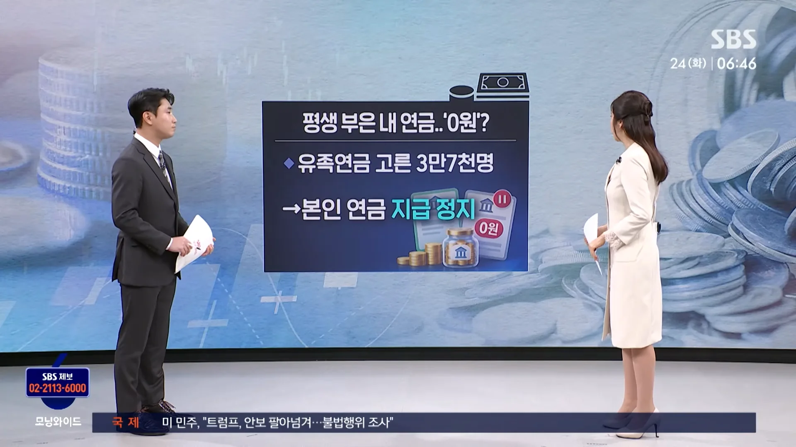
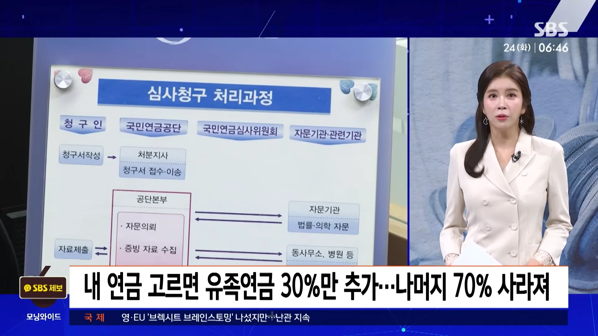
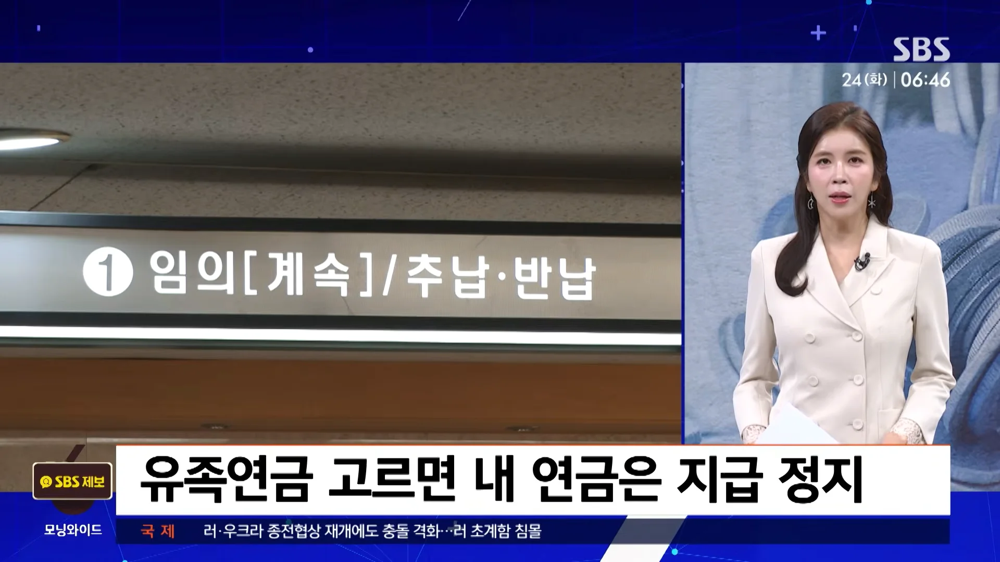
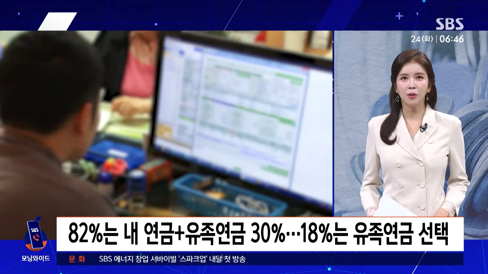
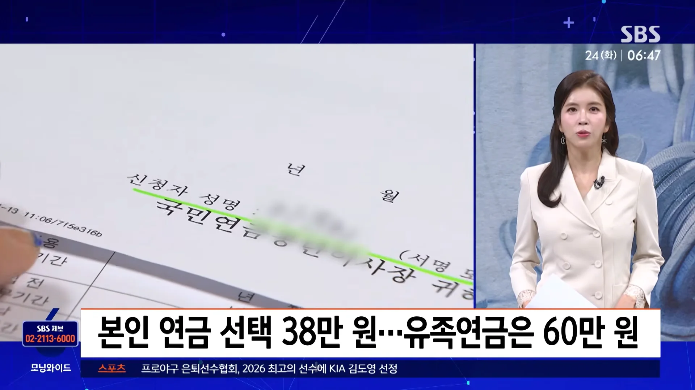
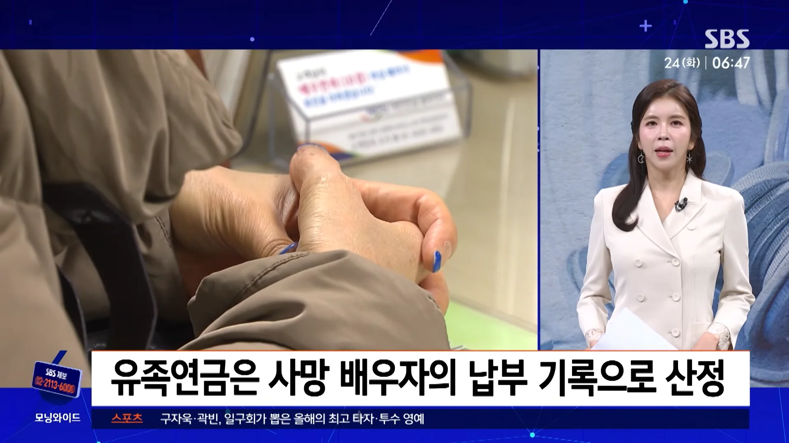
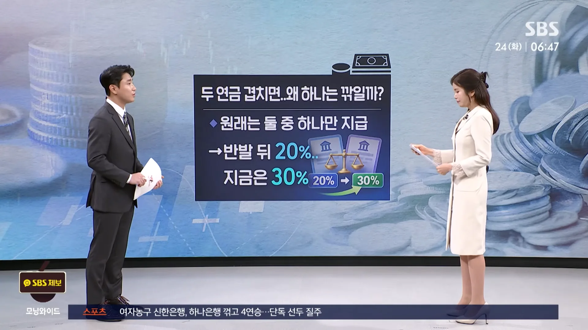
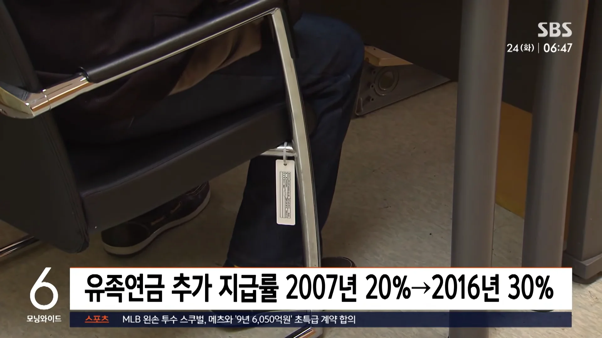
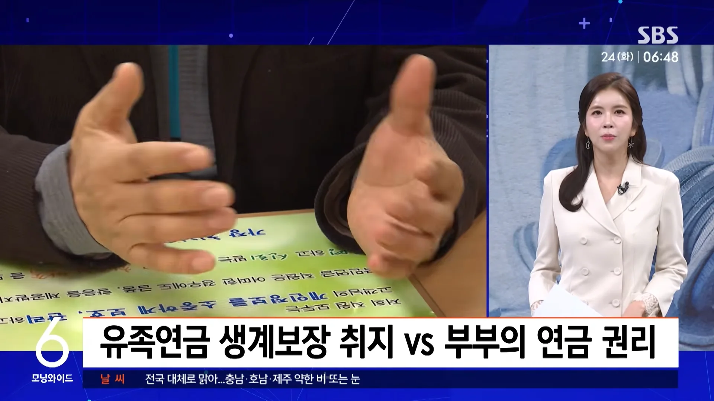
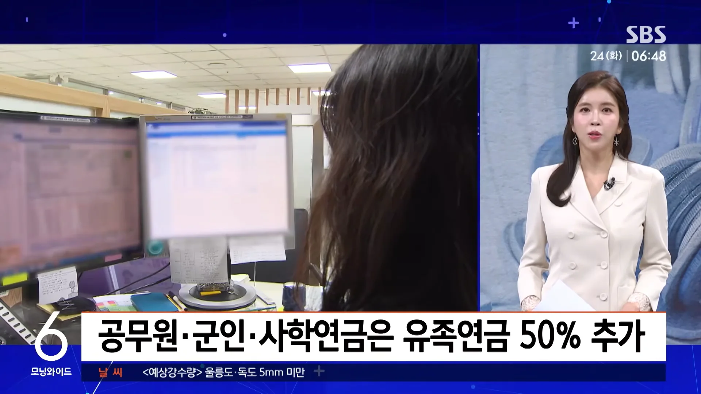
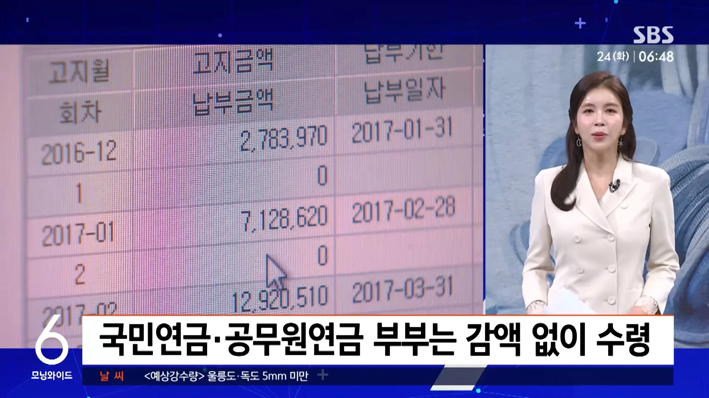
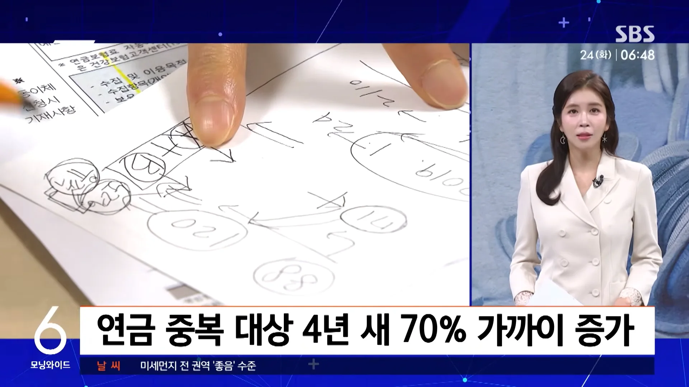
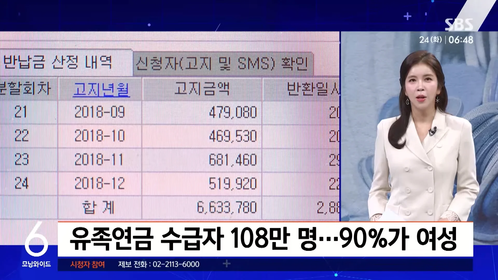
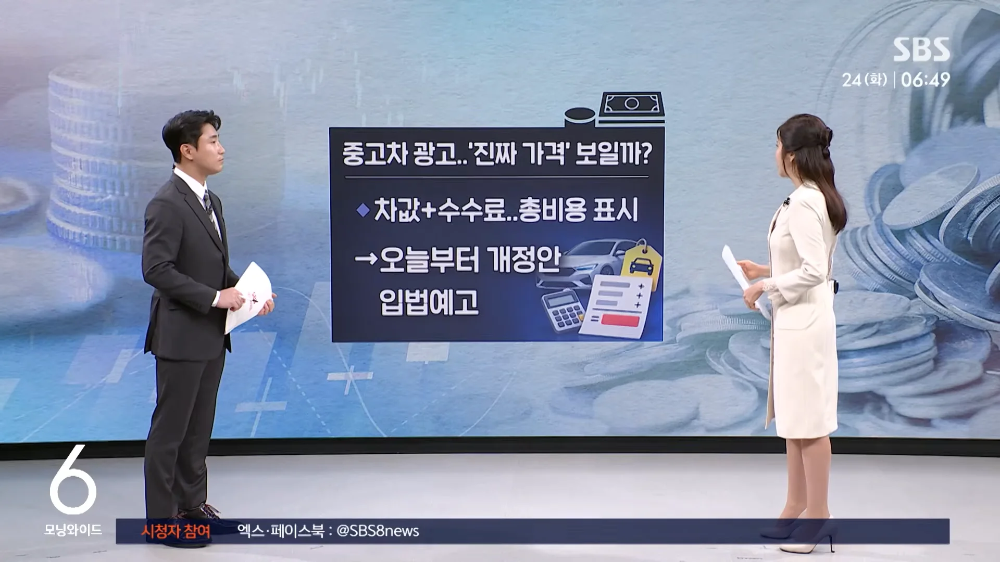
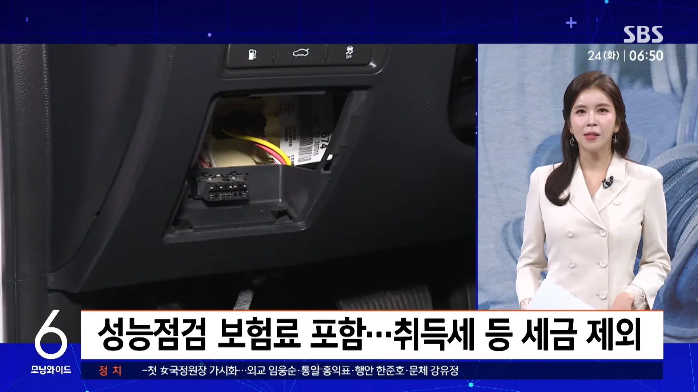
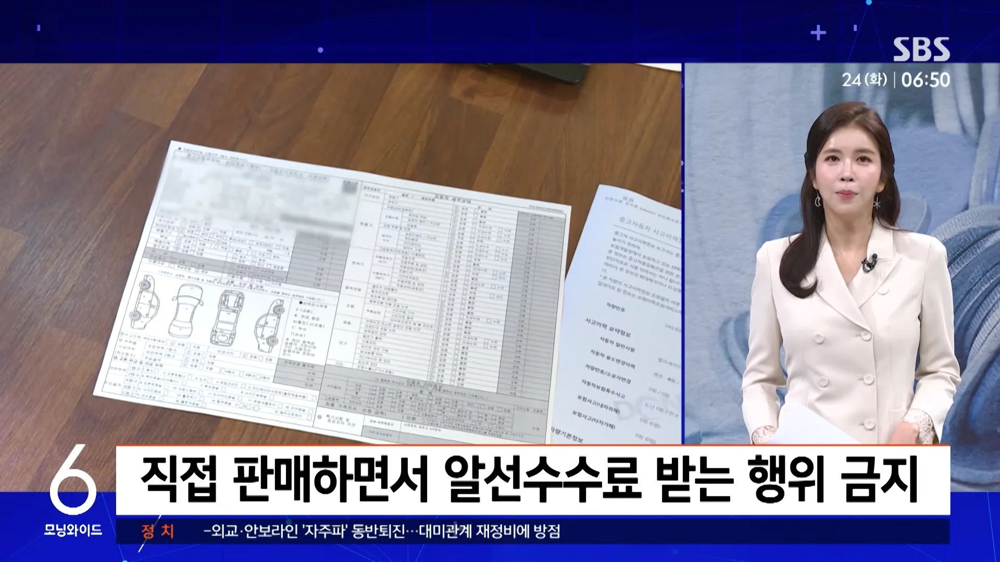
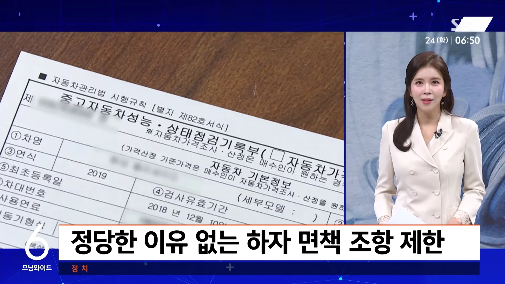
화요일 친절한 경제 한지연 기자 나와 있습니다. 한 기자, 배우자 먼저 떠나보낸 사람들이 연금 받을 때는 손해 본다는 지적이 나오고 있죠.
유족연금을 고른 3만 7천 명은 본인 연금이 한 푼도 나오지 않습니다.
요즘 부부가 맞벌이로 둘 다 국민연금 꼬박꼬박 붓는 집 많으시죠.
그런데 한 사람이 먼저 세상을 떠나면 남은 사람은 내가 부은 내 연금이냐, 떠난 배우자 몫으로 나오는 유족연금이냐, 둘 중 하나만 골라야 합니다.
내 연금을 고르면 유족연금은 30%만 얹어주고 나머지 70%는 사라집니다.
반대로 유족연금을 고르면 내 연금은 지급이 정지됩니다.
국회예산정책처 분석 보고서를 보면 지난해 이렇게 두 연금이 겹친 사람이 20만 8천 명인데, 82%는 내 연금에 유족연금 30%를 더 받는 쪽을, 나머지 18%는 유족연금을 택했습니다.
그러면 왜 내 연금을 포기했을까 싶으실 텐데요.
예를 들어, 내 연금이 20만 원, 유족연금이 60만 원이라면 내 연금을 고르면 20만 원에 유족연금 30%인 18만 원을 더한 38만 원, 반면 유족연금을 고르면 60만 원이라 유족연금 쪽이 훨씬 많거든요.
그런데 유족연금은 떠난 배우자가 부었던 기록으로 정해져서 평생 낸 내 보험료가 받는 연금액에는 아무런 차이를 못 만드는 거라 '내 연금 0원'이라는 말이 나오는 겁니다.
원래는 아예 둘 중 하나만 지급을 했는데요.
반발이 일자 조금씩 늘려온 게 지금은 30%가 됐습니다.
2007년에 처음으로 20%를 얹어주기 시작하고서, 2016년에 30%로 올라왔는데요.
유족연금을 어떻게 보느냐에 따라 생각이 갈립니다.
남은 가족의 생계를 받쳐주는 돈으로 보면 본인 연금이 있는 사람까지 다 줄 필요는 없다는 거고, 부부가 같이 보험료를 내서 쌓은 권리로 보면 깎는 게 부당하다는 거죠.
국민연금 연구원 연구진도 이건 사회적 합의로 정할 문제라고 봤습니다.
특히 논란인 건 다른 공적연금과의 차입니다.
공무원이나 군인, 사학연금은 본인 연금과 유족연금이 겹치면 유족연금의 절반을 얹어주고, 부부가 국민연금과 공무원 연금으로 나누어져 있으면 하나도 깎이지 않고 둘 다 받습니다.
이런 처지에 놓이는 사람은 갈수록 늘고 있습니다.
맞벌이가 늘면서 두 연금이 겹치는 사람이 4년 새 70% 가까이 늘었거든요.
재작년 기준으로 유족연금 받는 108만 명 가운데 열에 아홉이 여성이고, 한 달에 평균 35만 원 정도입니다.
유족연금을 받는 집 절반 넘게는 소득이 중간값의 절반도 안 되고요.
그래서 공적연금끼리 형평은 맞추되, 기금 재정도 같이 따져서 정교하게 고쳐야 한다는 목소리가 나옵니다.
오늘(24일) 마지막은 중고차 얘기네요. 광고 가격 표시가 바뀐다고요?
앞으로 온라인 중고차 광고에는 찻값의 각종 수수료까지 더해서 총비용까지 표시가 되는 개정안이 오늘부터 입법 예고됩니다.
중고차 사러 가서 광고에서 본 값보다 돈이 더 들어서 당황하신 분들 계실 텐데요.
그동안 광고에는 찻값만 적고 수수료는 계약할 때 따로 알려주는 경우가 있었거든요.
국토부의 이번 개정안은 바로 시행되는 게 아니라 입법예고 단계입니다.
바뀔 규정을 미리 알리고 의견을 듣는 절차로, 내년 1월 4일까지 진행됩니다.
개정안대로면 중개해 준 대가인 알선 수수료부터 등록 대행 수수료, 관리 비용, 성능·상태 점검 보험료까지, 항목마다 얼마인지도 보여줘야 합니다.
취득세 같은 세금은 이 총비용에서 빠집니다.
할부로 판다고 광고할 때는 현금 가격과 함께 매달 내는 돈과 횟수, 이자율, 계약금까지 밝혀야 하고요.
매매업자가 자기 차를 직접 팔면서 중개해 준 것처럼 알선 수수료를 따로 받는 것도 막습니다.
차에 하자가 나도 책임지지 않는다는 식의 조항을 정당한 이유 없이 계약서에 넣지 못하게 합니다.
지난 8월 정부 발표를 보면 중고차 민원 열에 여덟이 성능·상태 점검 기록 부실과 관련된 건데, 점검 책임 주체도 협회가 아니라 실제로 점검한 업체로 분명히 합니다.
다만 10년·20만 km 이하 차를 산 지 일주일 안에 엔진 같은 주요 장치가 고장 나서, 수리비나 수리 기간이 일정 기준을 넘으면 계약을 물릴 수 있게 하는, 이른바 '중고차 레몬법'은 법을 고쳐야 해서 따로 추진하고 있습니다.
댓글
수집 당시 댓글 69개
ㅇㅇ · 11.24 21:46:09
봇치쟝 · 11.24 21:46:11
· ㅇㅇ · 11.24 21:52:11
ㅇㅇ · 11.24 21:46:12
ㅇㅇ · 11.24 21:46:15
ㅇㅇ · 11.24 21:46:54
ㅇㅇ · 11.24 21:48:07
ㅇㅇ · 11.24 21:49:09
· ㅇㅇ · 11.24 21:50:21
· ㅇㅇ · 11.24 22:12:38
· ㅇㅇ · 11.24 22:13:25
ㅇㅇ · 11.24 21:49:25
ㅇㅇ · 11.24 21:49:29
· ㅇㅇ · 11.24 21:50:20
ㅇㅇ · 11.24 21:51:02
ㅇㅇ · 11.24 21:51:05
주식으로
국민연금
180조
날려먹으며
스갤러5 · 11.24 21:51:23
ㅇㅇ · 11.24 21:51:29
2456778 · 11.24 21:51:38
ㅇㅇ · 11.24 21:51:47
ㅇㅇ · 11.24 21:52:15
2456778 · 11.24 21:52:20
ㅇㅇ · 11.24 21:53:30
김대중이
대한민국에
뿌린
독
국민연금
o o · 11.24 21:53:36
ㅇㅇ · 11.24 21:54:20
ㅇㅇ · 11.24 21:54:50
ㅇㅇ · 11.24 21:54:59
ㅇㅇ · 11.24 21:55:10
ㅇㅇ · 11.24 21:55:12
· ㅇㅇ · 11.24 21:55:52
· ㅇㅇ · 11.24 21:57:03
· ㅇㅇ · 11.24 21:58:57
· o o · 11.24 22:00:43
o o · 11.24 21:55:55
· ㅇㅇ · 11.24 21:57:19
· o o · 11.24 21:59:28
· ㅇㅇ · 11.24 22:12:47
ㅇㅇ · 11.24 21:56:07
ㅇㅇ · 11.24 21:56:09
ㅇㅇ · 11.24 21:56:16
ㅇㅇ · 11.24 21:56:29
o o · 11.24 21:57:24
ㅇㅇ · 11.24 21:57:31
o o · 11.24 21:58:09
ㅇㅇ · 11.24 21:59:36
· ㅇㅇ · 11.24 22:02:04
ㅇㅇ · 11.24 21:59:43
ㅇㅇ · 11.24 22:00:07
· o o · 11.24 22:04:52
히이잉 · 11.24 22:01:19
ㅇㅇ · 11.24 22:01:20
한낮 · 11.24 22:01:37
ㅇㅇ · 11.24 22:02:55
가붕개들아
잔말말고
연금이나
쳐내라
잼통께서
주식으로
벌어주신다
ㅇㅇ · 11.24 22:02:57
ㅇㅇ · 11.24 22:04:01
ㅇㅇ · 11.24 22:04:03
ㅇㅇ · 11.24 22:04:27
kawa · 11.24 22:06:09
ㅇㅇ · 11.24 22:06:26
ㅇㅇ · 11.24 22:06:51
ㅇㅇ · 11.24 22:08:16
오호통재라 · 11.24 22:09:11
ㅇㅇ · 11.24 22:10:15
ㅇㅇ · 11.24 22:11:48
ㅇㅇ · 11.24 22:12:12
민주당이 지방선거 이기려고
· ㅇㅇ · 11.24 22:12:55
국내주식 보유율 늘리고 못팔게함
· ㅇㅇ · 11.24 22:13:47
국민연금 코스피 고점에 못팔고 좆댓슴
ㅇㅇ · 11.24 22:12:19
ㅇㅇ · 11.24 22:15:42